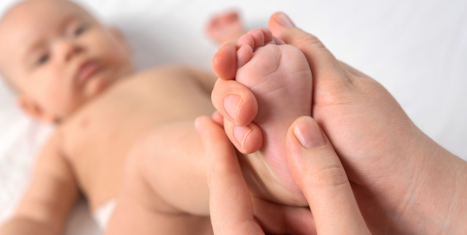

לקביעת ייעוץ עם מומחה כאב השאירו פרטים ונחזור אליכם
תינוקות
אבחון אוסטאופתי לתינוקות כולל טיפול בבעיות ובליקויים במבנה השריר והשלד. הטיפול שונה מטיפול פיזיותרפי או עיסוי בכך שאינו כולל מתיחות או טיפול עמוק. למרות עדינותו, הטיפול מאפשר שחרור של חסימות נוזלי עמוד שדרה ולחץ המופעל על שרירים ועצבים ובכך לסייע לתינוקות הסובלים מטראומות שלאחר לידה, כאבי בטן, אוזניים ועוד ע”י הזזה עדינה של איברים שונים.
יתרונות טיפול אוסטאופתי לתינוקות
תינוקות רכים יכולים להרוויח מאוד מטיפול באיזור הגולגולת שמופעל עליה לחץ עצום במהלך הלידה עצמה. הטיפול יכול לשחרר את התינוק מטראומת הלידה ומאפשר לתקן חוסר סימטריה במיקומן של עצמות הגולגולת. בנוסף, הטיפול מסייע בהרגעת התינוק ובטווח רחב של בעיות שנגרמו לתינוק במהלך או לאחר הלידה כתוצאה מלחץ על תעלת העצב הגולגולתי או על על מערכת העצבים של עמוד השדרה.
בין התחומים שבהם ניתן לטפל באמצעות אוסטאופתיה יש למנות בעיות הנקה כתוצאה מאופן חיבור הלשון ללסת שגורם ללחץ על עצבים בגולגולת ורפלקס בליעה שנגרם כתוצאה מהפעלת לחץ על מערכת העצבים. אוסטאופתיה מסייעת בזיהוי ובתיקון ליקויים בטונוס (מתח) השרירים של תינוקות. הטונוס הוא המתח או כיווץ השרירים שיש בגוף כשהגוף איננו מבצע תנועה. תינוקות נולדים עם טונוס שרירים תקין, נמוך או גבוה. טונוס שרירים תקין מאפשר תנועתיות טובה וטבעית של השרירים ומעברים קלים ממצב למצב (שכיבה, התהפכות, זחילה, ישיבה). טונוס השרירים נשמר באמצעות גירוי תת-עצבי שנחלש בזמן או אחרי הפעלת שרירים ומסייע לגוף להישאר יציב בזמן מנוחה.
טונוס חלש (היפוטוניה) – עלול להיגרם מגורם גנטי או ממנוחה מרובה של התינוק או האם במהלך ההריון. הוא מתבטא, למשל, בתינוק הנראה “רפוי” ומתקשה לבצע פעולות בהתאם לגילו (להתהפך ולהרים ראש, לשלוח ידיים). בהמשך, היפוטוניה יכול לגרום לבעיות בשיווי המשקל, לעיכוב הליכה ולהפרעות בהתפתחות המוטורית בשל חולשת שרירים.
טונוס מוגבר (היפרטוניה) – גורם לפעילות מוגברת של התינוק, מתאפין בשרירים חזקים מאוד עם תנועה נוקשה היכולה להביא לקשיים במוטוריקה, לקושי בשינה ולצורך בפריקת אנרגיה המצטברת בשרירים.
חשוב מאוד להיות ערים למצב השרירי של התינוק ולעשות מאמץ לאזן אותו כדי לאפשר התפתחות תקינה.
בעייה נוספת הנובעת מפעילות לא מותאמת של השרירים היא טורטיקוליס, נטיית הראש לצד אחד. האוסטאופת מסייע לשחרר את הלחץ העצבי המופעל על הגולגולת ועל הצוואר ועל ידי כך מסיר את הגורם שמגביל את יכולת התנועתיות של ראש התינוק. לאחר אבחון הנקודות הבעייתיות בגולגולת התינוק או במבנה השלד האוסטואפת מטפל בהן בעדינות רבה באופן שמרגיע את התינוק.
צור קשר
מתעניין אודות הטיפול ? קרא עוד לגבי טיפולים אוסטאופתים !